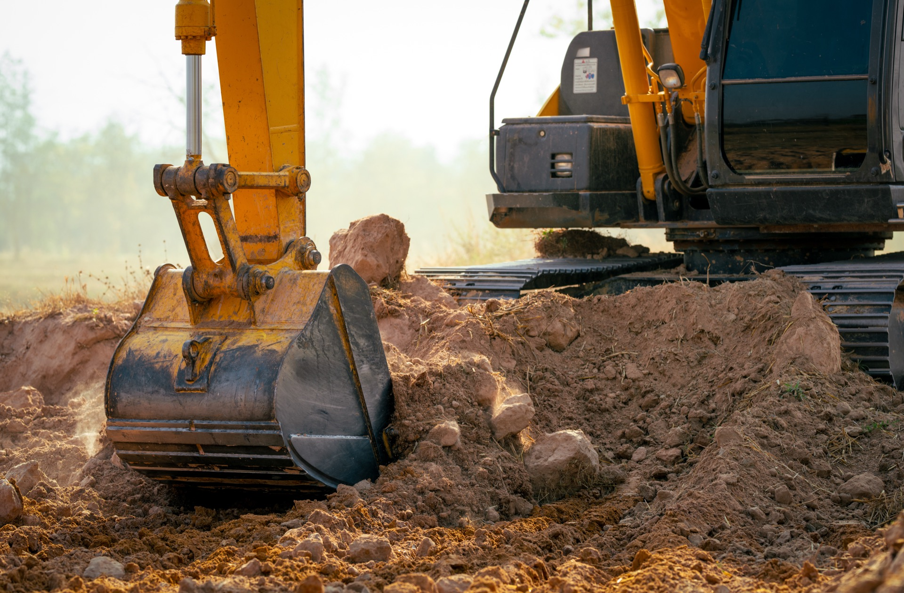
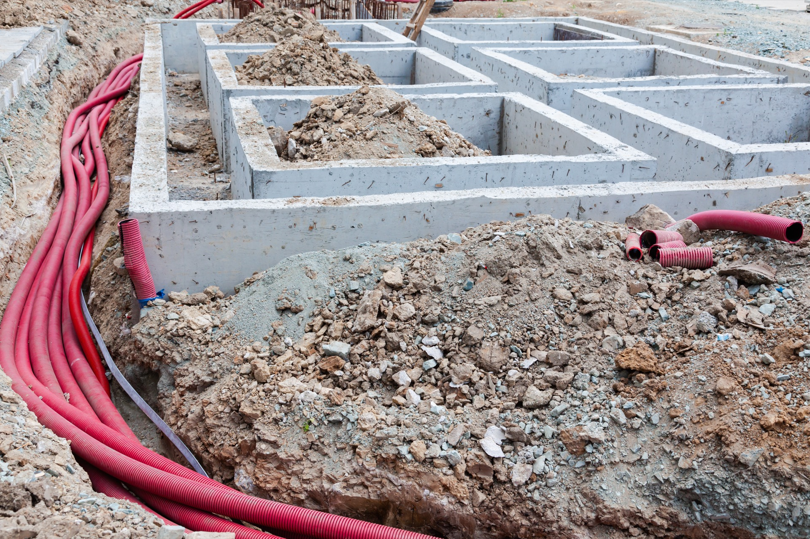
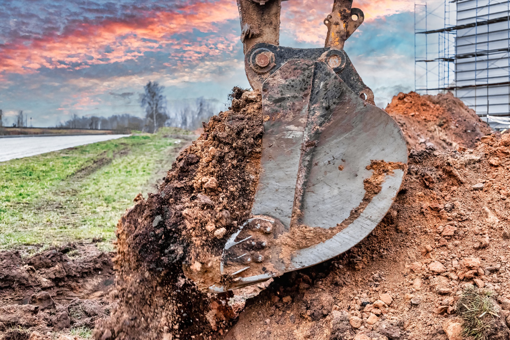
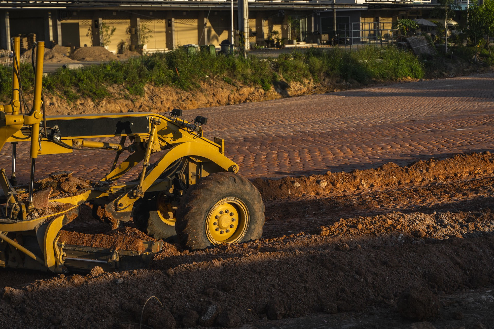
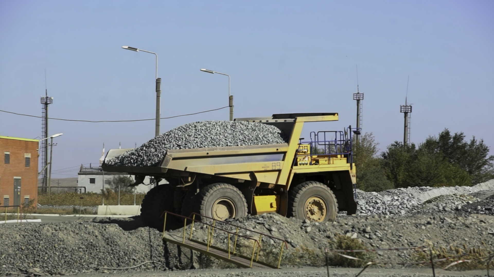
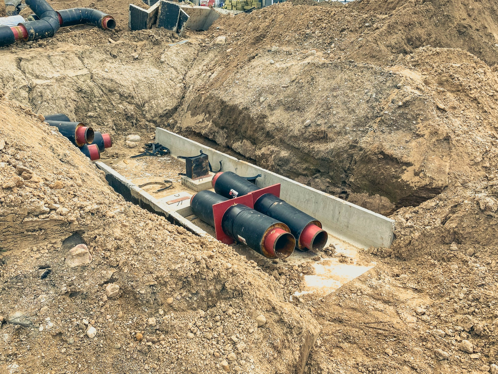
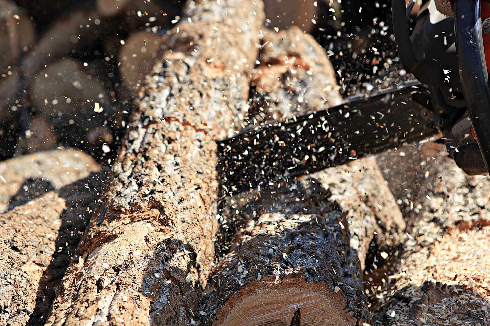
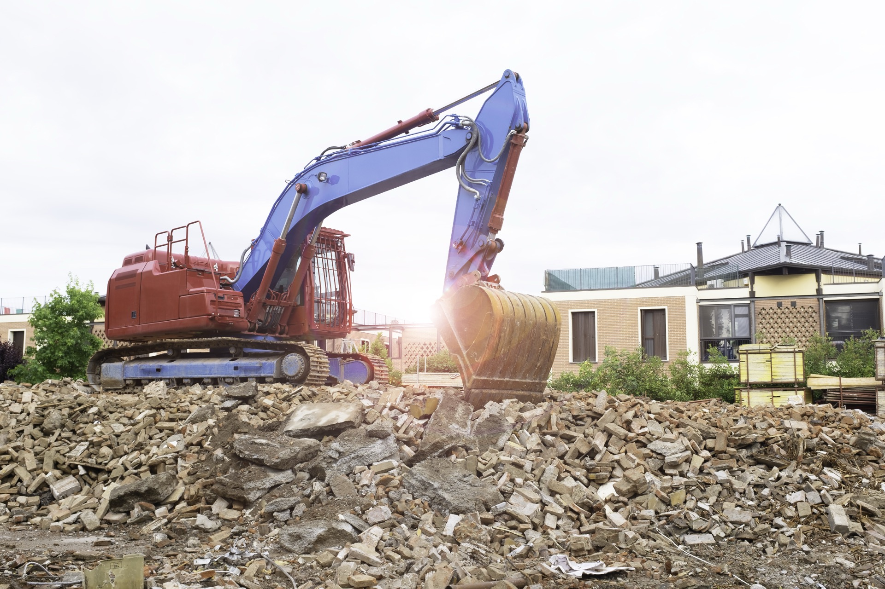

Komplett leverandør av grunnarbeid på Romerike. Alt fra små private oppdrag til store næringsprosjekter.

Profesjonell utgraving for alle typer byggeprosjekter. Vi graver tomter for nybygg, tilbygg, garasjer og næringsbygg med presisjon og effektivitet. Moderne maskiner sikrer nøyaktig arbeid og minimal påvirkning på omgivelsene.

Fuktig kjeller? Dårlig drenering er en av de vanligste årsakene til fuktskader i norske boliger. Vi legger ny drenering rundt grunnmuren og sørger for at vannet ledes bort fra huset – en investering som beskytter boligen din i mange tiår.

Vi graver grøfter for kabler, rør og ledninger med presisjon. Enten det gjelder el-kabler, fiber, vannledninger eller avløp – vi sørger for riktig dybde, fall og igjenfylling etter gjeldende normer.

Vi planerer og opparbeider gårdsplasser, adkomstveier, parkeringsarealer og tomter. Riktig planering gir et solid underlag og et pent resultat som holder i mange år.

Vi kjører inn og ut masser etter behov. Grus, pukk, jord, stein og fyllmasser – levert til riktig sted til riktig tid. Vi har gode avtaler med lokale masseleverandører på Romerike.

Profesjonell legging av vann- og avløpsledninger. Vi utfører stikkledninger til kommunalt nett, separering av avløp og utskifting av gamle rør. Alt etter gjeldende kommunale krav og normer.

Når fjellet er i veien, ordner vi det. Vi samarbeider med sertifiserte bergsprengere for trygg og kontrollert sprengning. Nødvendige tillatelser og nabovarsel ivaretas.

Vi river mindre bygg og konstruksjoner og klargjør tomten for nytt bygg. Avfall sorteres og leveres til godkjent mottak. Effektivt og ryddig fra start til slutt.
Vi gir deg gratis befaring og et tydelig tilbud uten forpliktelser.